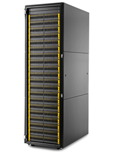

HPE StoreServ 8000 Tech Specs:
Four Models, 8200, 8400, 8440, 8450
StoreServ 8450
- 8450 Performance 1,000,000 IOPs
- 10-core 2.4GHz processor
- Less than 1 milliseconds (ms) latency
- 8450 Max drives 480 (SSD)
- 8450 Max capacity 3351TiB
- 8450 2-4 controllers
- 8450 number of add on enclosures 18
- 8450 Max Host ports 24
- 8450 Max cache 384 GiB
- 8450 Max on node cache 384 Gib
- 8450 Max Flash Cache N/A
- SSD Only (no spinning devices)
StoreServ 8440
- 8440 Performance 1,000,000 IOPs
- 10-core 2.4GHz processor
- Less than 1 milliseconds (ms) latency
- 8440 Max drives 960
- 8440 Max SSD 480
- 8440 Max capacity 4000 TiB
- 8440 Max cap SSD 3351 TiB
- 8440 2-4 controllers
- 8440 Max Host ports 24
- 8440 number of add on enclosures 38
- 8440 Max cache 8.4 TiB
- 8440 Max on node cache 384 GiB
- 8440 Max Flash Cache 3000 GiB
StoreServ 8400
- 8400 Performance 650,000 IOPs
- 6-core 2.2GHz processor
- Less than 1 milliseconds (ms) latency
- 8400 2-4 controllers
- 8400 Max drives 576
- 8400 Max SSD 240
- 8400 Max capacity 2400 TiB
- 8400 Max cap SSD 1676 TiB
- 8400 Max Host ports 24
- 8400 Max enclosures 22
- 8400 Max cache 1.6 TiB
- 8400 Max on node cache 128 GiB
- 8400 Max Flash Cache 1536 GiB
StoreServ 8200
- 8200 Performance 320,000 IOPs
- 6-core 2.2GHz processor
- Less than 1 milliseconds (ms) latency
- 8200 MAX drives 240
- 8200 Max SSD 120
- 8200 Max capacity 1000 TiB
- 8200 Max cap SSD 838 TiB
- 8200 Max Host ports 12
- 8200 Max enclosures 9
- 8200 cache 800 GiB
- 8200 Max on node cache 64 GiB
- 8200 Max Flash Cache 768 GiB
All StoreServ 8000
- Faster Processors
- 1 Gen 5 ASIC per node
- PCI Gen3 8Gb/s
- 12Gb SAS backend
- RAID Levels 0,1,5,6
- SFF SSD 480GB (non AFC)
- SFF SSD 400GB, 920GB, 1.92TB, 3.84TB, 7.68TB, 15.36TB
- SFF 15K 300GB, 600GB
- SFF 10K 600GB, 1.2TB, 1.8TB
- SFF 7.2K 2TB
- LFF SSD nonAFC 480GB
- LFF 7.2K 2,4,6 and 8TB
- SFF SSD Encrypted 920GB, 1.92TB, 3.8TB, 7.68, 15.36
- SFF 15K Encrypted 600GB, 1.2TB
- LFF 7.2K Encrypted 4,6 and 8TB
- HPE 3PAR supports 120 SSDs / node pair
- Min SSD's per node pair = 6
All arrays can provide the following:
- Snapshots, Remote Copy, Thin Provisioning
- Application integration
- Oracle, VMware, SQL, Exchange etc
- Max VV per system 8,192
- Max Base VV 4,095
- Max VLUNs 32,000
- Max Snap per VV = 500
- MAX CPG per system 2,048
- Max Domain per system 1,024
- Max iSCSI Initiators = 64 per port
- Max FC Initiator = 1024 per node pair
- Max Hosts is ~= Max Initiator/2
- HPE 3PAR StoreServ Data Encryption
Features
- Thin Provisioning
- Remote Copy
- Thin Dedupe
- File Persona
- Adaptive Flash Cache
- Persistent Ports
- Cache Persistence
- Virtual Domains
- Snapshots
- System Reporter
- AO,DO
- QOS
- Peer Persistence
- Migration tools